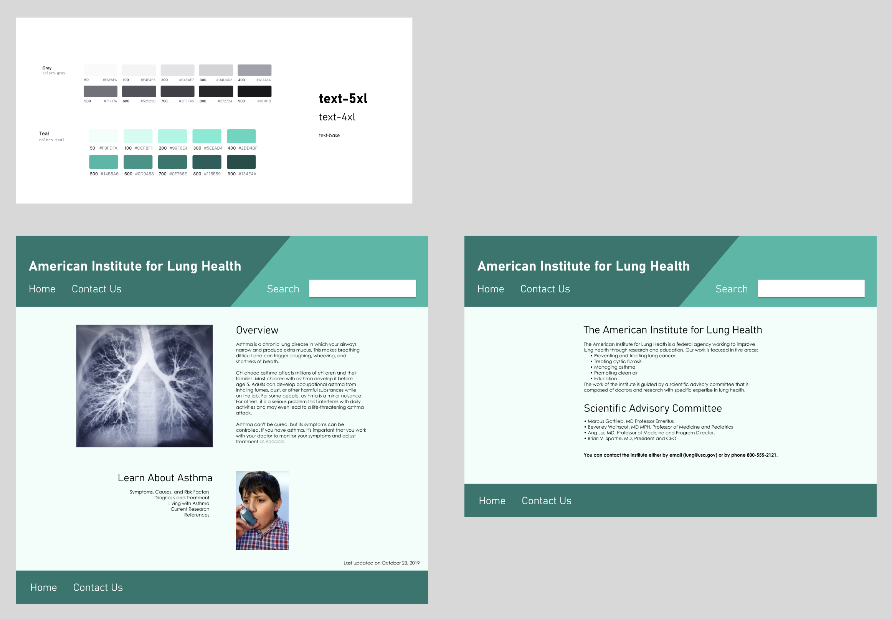
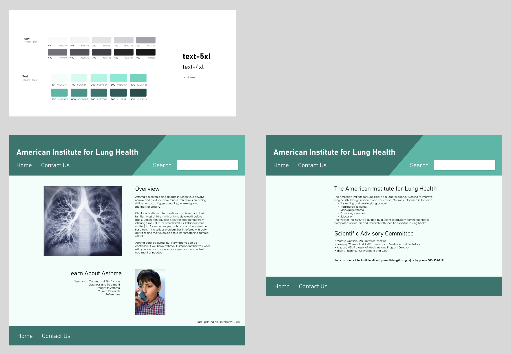

Client: BSCS, a science education nonprofit in Colorado Springs, CO
Duration: 6 weeks
The Problem
BSCS is making an application that educators can use to teach middle and highschool students how to identify reliable scientific information online.
The app need to link to 8 fake websites purporting to provide scientific information on various topics.
The websites need to look realistic but not necessarily good.
They need to reflect the wide variety of websites kids encounter online.
Research
I made wireframes for the sites in Figma, including style documentation and Tailwind classes.

 
